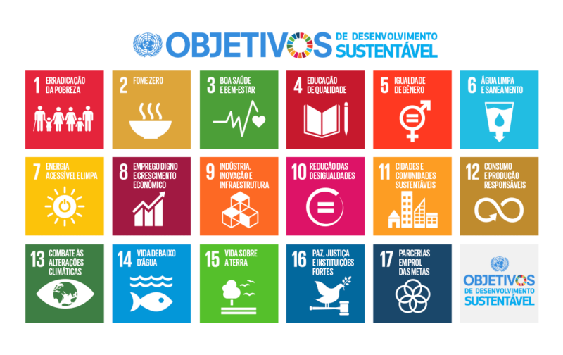

Introdução
Este site foi desenvolvido e inspirado no ODS-14 vida na água e a partir disto nós também criamos o jogo CooperFish, para concentizar sobre a importância de mantermos nossos recursos hídricos livres de plásticos, que são nossos maiores problemas.
Este projeto é o requisito para conclusão do curso "Além de jogar eu faço jogos" disponibilizado pela CPDI e Instituto Cooperforte.
Objetivos de Desenvolvimento Sustentável
Os Objetivos de Desenvolvimento Sustentável são um apelo global à ação para acabar com a pobreza, proteger o meio ambiente e o clima, e garantir que as pessoas em todos os lugares possam desfrutar de paz e de prosperidade. Estes são os objetivos para os quais as Nações Unidas estão contribuindo a fim de que possamos atingir a Agenda 2030 no Brasil.
A Agenda 2030
Adotada em setembro de 2015 por 193 Estados Membros da ONU (UN General Assembly Resolution 70/1), a Agenda 2030 para o Desenvolvimento Sustentável resultou de um processo global participativo de mais de dois anos, coordenado pela ONU, no qual governos, sociedade civil, iniciativa privada e instituições de pesquisa contribuíram através da Plataforma ‘My World’. Sua implementação teve início em janeiro de 2016, dando continuidade à Agenda de Desenvolvimento do Milênio (2000-2015), e ampliando seu escopo. Abrange o desenvolvimento econômico, a erradicação da pobreza, da miséria e da fome, a inclusão social, a sustentabilidade ambiental e a boa governança em todos os níveis, incluindo paz e segurança.
Link: https://brasil.un.org/pt-br/sdgs
Acompanhamento e Avaliação da Agenda 2030
O acompanhamento e avaliação da Agenda 2030 são fundamentais para a sua implementação e deverão ser feitos sistematicamente nos níveis global, regional e nacional. O Fórum Político de Alto Nível sobre o desenvolvimento sustentável (HLPF, na sigla em inglês) é a instância responsável pela supervisão deste acompanhamento em nível global. Ele está sob os auspícios da Assembleia Geral e do ECOSOC, o Conselho Econômico e Social da ONU.
Dados de qualidade, acessíveis, atualizados, confiáveis e desagregados, baseados em fontes oficiais nacionais, serão necessários para a produção periódica dos indicadores, que auxiliarão o monitoramento dos objetivos e metas. O quadro de indicadores globais foi desenvolvido pelo Grupo Interagencial e de Peritos sobre os Indicadores ODS, e foi aprovado pela Comissão de Estatística da ONU e adotado pelo ECOSOC e pela Assembleia Geral.
Implementação
O objetivo 17 e algumas metas dos demais objetivos tratam dos meios necessários para a execução da Agenda, que exigirá parcerias e solidariedade na mobilização de recursos, um engajamento entre governos, setor privado, sociedade civil e o Sistema ONU.
O documento final da Terceira Conferência Internacional sobre o Financiamento para o Desenvolvimento, denominado Agenda de Ação de Adis Abeba, também é considerado como parte integrante da Agenda 2030. Da mesma forma, ela também apoia a implementação de estratégias e programas de ação relevantes, atualmente em curso pelo mundo, tais como: Declaração e Programa de Ação de Istambul, o Roteiro das Modalidades Aceleradas de Ação dos Pequenos Estados Insulares em Desenvolvimento, o Programa de Ação de Viena para os Países em Desenvolvimento sem Litoral para a Década 2014-2024, a agenda 2063 da União Africana e o programa da Nova Parceria para o Desenvolvimento da África (NEPAD).
Link: https://odsbrasil.gov.br/home/agenda
Declaração
Declaração contém a visão, os princípios e os compromissos da Agenda 2030. A visão é ambiciosa e transformadora, porque prevê um mundo livre dos problemas atuais, como pobreza, miséria, fome, doença, violência, desigualdades, desemprego, degradação ambiental, esgotamento dos recursos naturais, entre outros.
Os princípios centrais são a soberania plena e permanente de cada Estado, a universalidade, o desenvolvimento integrado, que assegure uma implementação nacional consistente com as aspirações nacionais e a visão global, e não deixar ninguém para trás, o que implica no cumprimento dos objetivos e metas em todos os países e em todos os segmentos da sociedade.
Os compromissos estão presentes nos objetivos e metas, que devem ser compartilhados através de uma maior cooperação internacional. Com isso, ela reafirma também compromissos com os direitos humanos (incluindo o direito ao desenvolvimento) e o direito internacional.
ODS 14
Indicador - Vida na água

Qual é o objetivo deste indicador ?
Conservar e usar de forma sustentável os oceanos, mares e os recursos marinhos para o desenvolvimento sustentável.
Qual a temática ?
Problemática do lixo nas águas.
Confira algumas dicas
Imagens de praias sujas
Imagens de praias de Floripa
Jogo
O jogo CooperFish, também faz parte do requisito para conclusão do curso e também representa o ODS 14, onde um peixinho nadando no oceano vai em busca de alimentos e deve se manter longe do tão temido lixo (representado como a garrafa pet).
Segue o link para o jogo